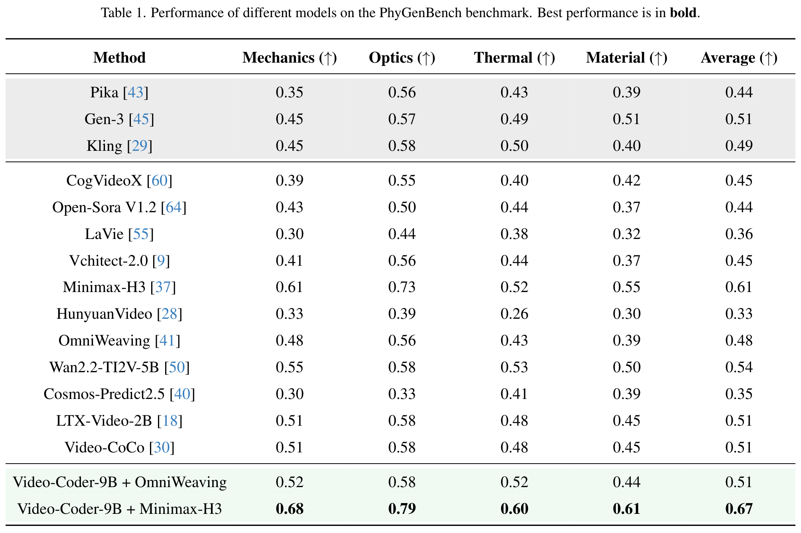
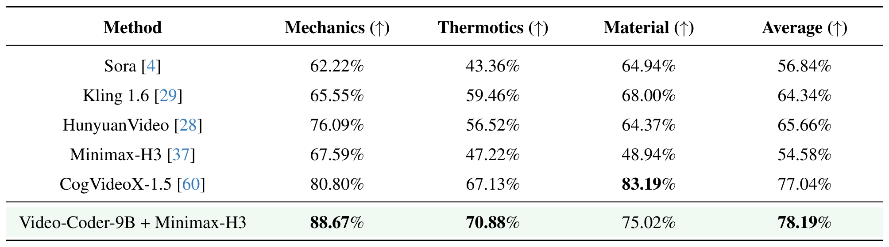

Abstract
Recent years have witnessed remarkable progress in video generation in terms of visual quality and temporal consistency. However, generating videos with precise spatial structure, coherent motion dynamics, and controllable scene composition remains challenging. In this paper, we introduce Video-Coder, the first attempt to train a code-driven video generation agent, which autonomously writes and executes code to construct a dynamic 3D scene (Draft Video) that provides structure and motion signals to downstream video generators.
To support this paradigm, we design a dedicated data pipeline and curate two high-quality datasets, Video-Coder-SFT-10k and Video-Coder-RL-4k, which contain diverse prompts and ground-truth reference videos. We further develop the Video-Coder Harness, a unified interactive environment integrating code execution, 3D scene rendering, and execution feedback for agent training and inference. We then train Video-Coder with SFT followed by harness-native agentic reinforcement learning with dual reward feedback, which combines execution-based and video-based rewards.
Additionally, we design an annealing training strategy that gradually reduces the execution reward over time, allowing the model to rely more on the video reward in the later training stages. Experiments show that Video-Coder achieves significant gains, improving Minimax-H3 by approximately 7 points on PhyGenBench and 24 points on VBench-2.0. We hope this work can serve as an open foundation for coding agents in video generation, and we fully open-source our data, models, and code.
From a prompt to a video
Write the scene
A coding agent writes Blender Python to specify objects, spatial layout, motion, and camera behavior.
Execute and inspect
The Video-Coder Harness renders the scene and provides feedback for iterative code refinement.
Guide the generator
The rendered Draft Video supplies structure and motion signals for the final video generation.
Quantitative results
Physics-focused evaluation on PhyGenBench and VBench-2.0.
Video-Coder-9B + MiniMax-H3.
Video-Coder-9B + MiniMax-H3.
VBench-2.0 improvement over MiniMax-H3.
PhyGenBench

VBench-2.0

Qualitative results
Scene programs guide object layout, motion dynamics, and camera behavior across diverse prompts.